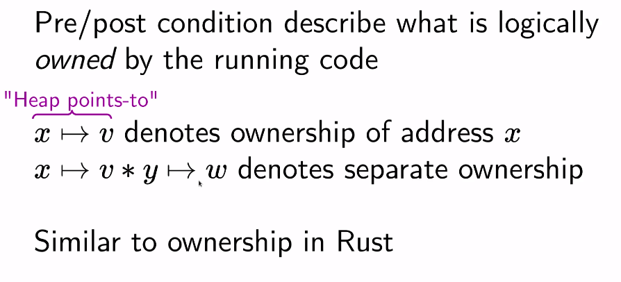
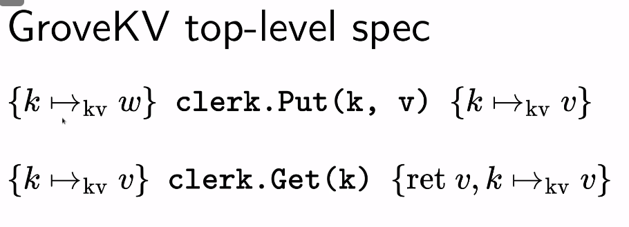
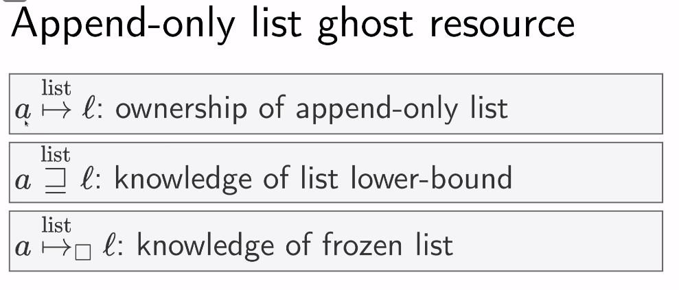
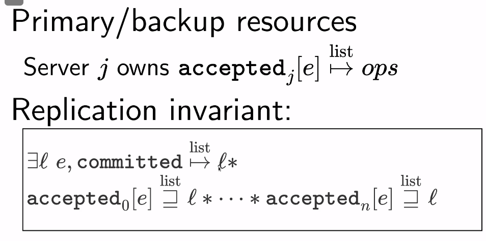
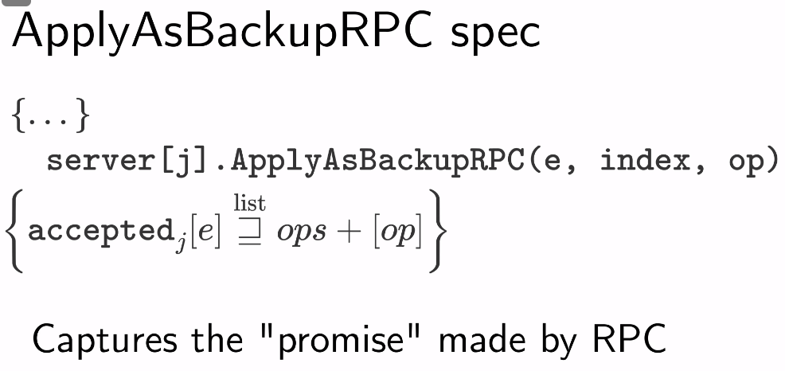
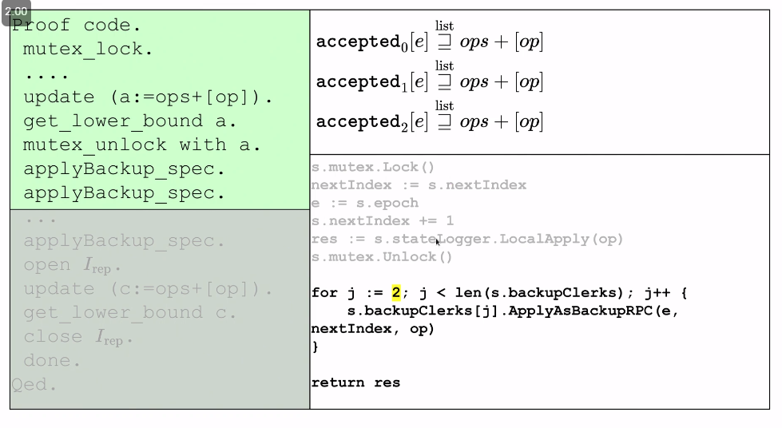

Introduction
- Leases are widely used technique that is a promise that some aspect of a system will not change during its duration
- Important for achieving good performance since they allow leaders to make decisions without having to contact replicas to confirm they are still the leader
- Challenging to use correctly when interacting with crash recovery / reconfiguration
- We have to make sure leases expire before we can choose a new leader
- When executing operations, a lease may expire in the middle of it
- Grove is a library based on concurrent separation logic for reasoning about distributed systems
- CSL decomposes a system's state into parts called resources that are owned by different threads
- First library to handle time-based leases
- Paper introduces Grove, GroveKV, and an evaluation of GroveKV's proof effort
GroveKV
- Simple primary / backup replication with a configuration service
- Primary has to backup to all replicas before responding
- We divide our time into epochs where most epochs will have a corresponding configuration
- Some will not if they were never actually running
- When reconfiguration happens, it seals one of the servers from the old epoch to ensure the system does not make any progress
- Prevents split brain by only ever looking at the configuration manager's highest number epoch
- Leases are used to execute read-only operations without replication
- Config server hands out a lease (possibly to multiple servers), promising not to change the configuration while the lease is out
- The issue if you don't use a lease is that a reconfiguration could cause this server to no longer be part of the network but it still serves requests
- Backups only serve reads when they know what they have is committed (the primary therefore has to tell backups what is committed)
- Primary only serves reads that it knows all of the backups have applied (waits / tells client to retry otherwise)
Formal Verification
- Idea is that you write a spec, code, and some proof code
- Spec and proof code are written in some other language
- You then run it with a proof checker like coqc that verifies if the proof is ok
- Grove verifies system by going line by line
Grove
- Specs are made up of pre and postconditions (Hoare logic)
- I.e. a sort function takes in a list and returns a sorted list
- This isn't super simple though for GroveKV because how do we deal with concurrent operations
- We deal with this through concurrent separation logic (CSL)
- This was originally designed for concurrent (non-distributed) programs
- Grove extends this to distributed systems
CSL

- If this shows up in a condition, it means that the currently running code has x and knows what value it points to (some v) for the firs tline
- Second line indicates that it has two variables x and y and they are disjoint and we know what both of them point to

- This is an example of a weak spec that doesn't quite have linearizability because this assumes that you have sole ownership of a key at a given time
- We ideally want linearizability where it allows us to make multiple calls to the same key at the same time
- We'll go with this simplified spec for now
- To model some of the more complex operations, we can use this idea of a ghost resource
- This doesn't actually have a physical representation in the code that we can look at, but the idea is that it is something the proof can add to / manipulate as it goes through
- One example is an append-only list which is used in GroveKV to represent the log

- Knowledge is something that can be passed around arbitrarily without needing ownership of the original resource
- This works for append-only list because if lists can only be appended to, we know the lower-bound will never change
- Frozen lists are useful for when we do the sealing state for configuration change
- It guarantees that the list will never change
- In the proof for GroveKV, we have each server maintain a list for every epoch of what they have accepted
- There is then an overall committed list that contains everything the client should see

- The replication invariant is that every server has to have accepted the committed list as a prefix

- The way locks work in the proof is that they guard access to some resources
- After calling lock, you can now get ownership of those
- When we call unlock, we lose access to ownership, but if we got knowledge before losing access, then we can retain that knowledge
- This knowledge is something that we have to be sure is true, so it can't really do something about exact state of something, just something about its prefix or a bound on it

- I.e. in this case, we have knowledge after releasing the lock that accepted has this new operation added to it at this particular index
- The spec of ApplyAsBackupRPC allows us to get knowledge later that each of these accepted ghost entries has a prefix of this
- At the end we can open up the replication invariant and use it to update committed
- Idea is that we can gain ownership of the invariant box and mess around with it but when we close it we must have the invariant still satisfied
- We also have an idea of time-bounded invariants, which captures the idea that we have this lease that is valid for this amount of time and we know this thing during that lease
- This allows us to conclude what the current epoch number is, which then allows us to open up the replication invariant box and conclude that we have all committed operations, allowing us to serve reads
- The way the proof handles what if situations is that we define these exact operations that only allow you to do these certain things
- As long as your proof code matches up with your actual code, we are fine
- I.e. we can't delete from append only lists, so backups can't lose operations
- An old primary can't do a put because after we move to a new configuration, one of the old lists will now be frozen
- But the old primary has to have done a put by contacting all replicas, which means we would have ran into an issue
- There's a large overhead of writing proof code
- 1.6k lines of actual Go code while 20k lines of proof code for GroveKV